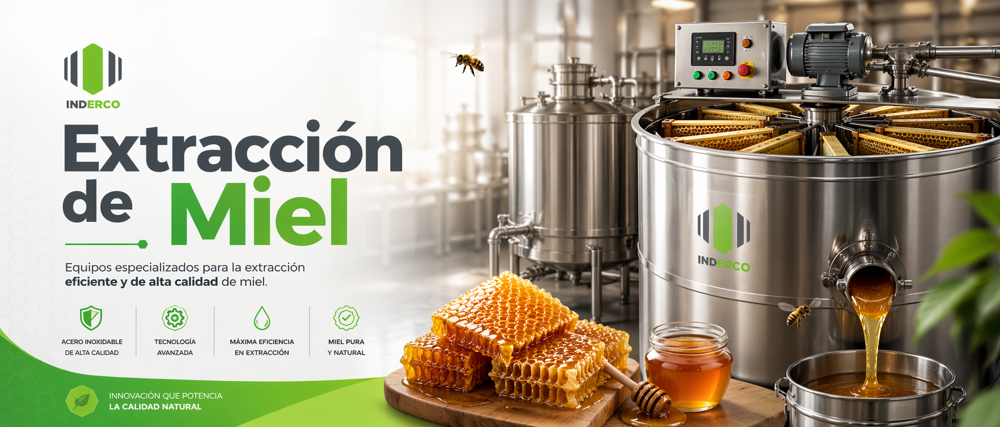

IND
ERCO
☰
La Empresa
Productos
Extracción de miel
Fraccionado de miel
Homogeneizado de miel
Accesorios
Industria 4.0
Contacto Comercial
Presupuesto

Para Apicultores Industriales
Para Medianos y Pequeños Apicultores
×
Contactar por WhatsApp